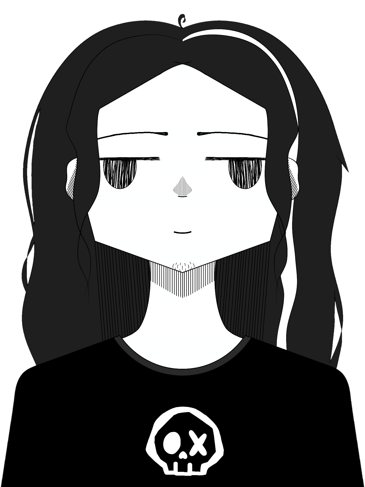

Micrófono del HONOR → limpieza de ruido → modificador de voz → PRISM. El micrófono del POCO puede permanecer silenciado.
Este teléfono usa siempre el mismo ID fijo de PeerJS. No tienes que copiar un ID aleatorio.
Sirve para comprobar la boca y el audio antes de pegar la URL en PRISM.
